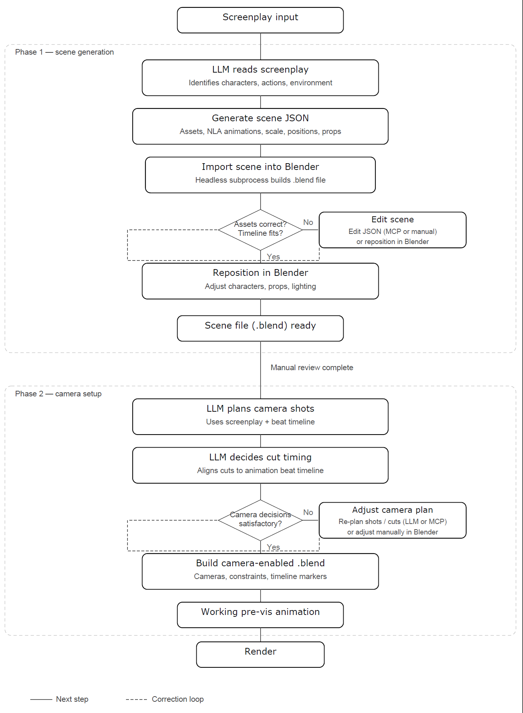

Three-dimensional previsualization can help filmmakers reason about blocking, camera placement, lens choice, and spatial continuity before production, but conventional 3D workflows remain difficult for independent and entry-level filmmakers to access. This project presents a mixed-initiative screenplay-to-3D pipeline implemented in Blender that converts formatted narrative text into editable previsualization scenes. A large language model maps screenplay descriptions to a structured specification over a curated low-poly asset and animation vocabulary. Schema validation and deterministic correction passes address recurring placement, animation-transition, and prop-attachment errors. The workflow provides an explicit review boundary before camera planning and supports both direct Blender editing and bounded natural-language revision.

Figure 1: Detailed workflow of the screenplay-to-3D previsualization pipeline. The process begins with formatted screenplay input, proceeds through Phase 1 scene generation and manual review, then uses the reviewed scene state for Phase 2 camera planning and final Blender output.
Select a screenplay excerpt below to view the text input and the resulting generated camera-ready 3D previsualization sequence.